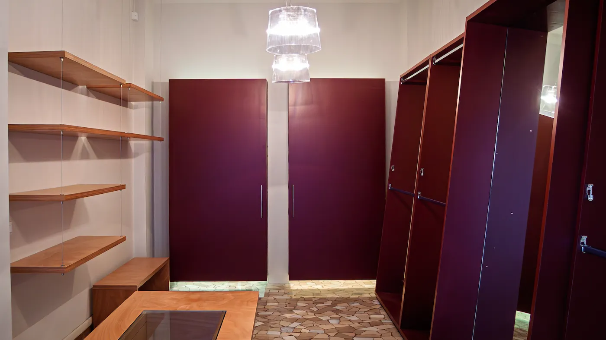
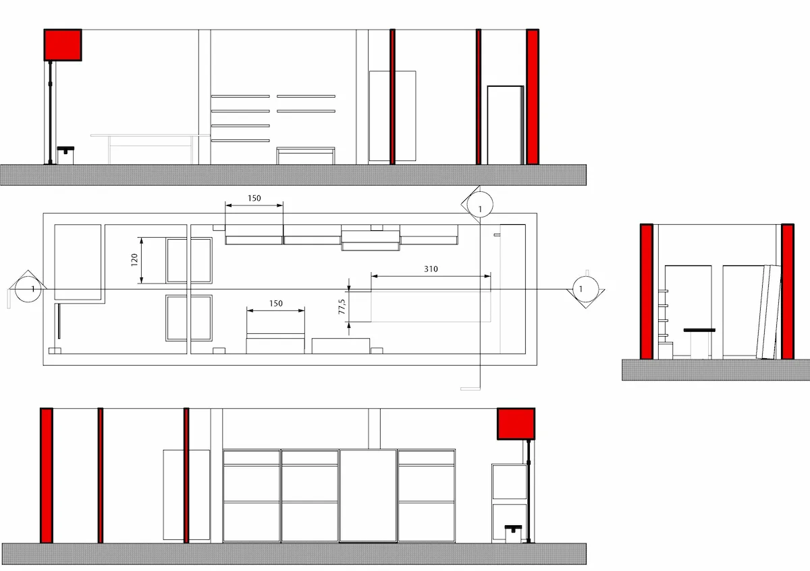
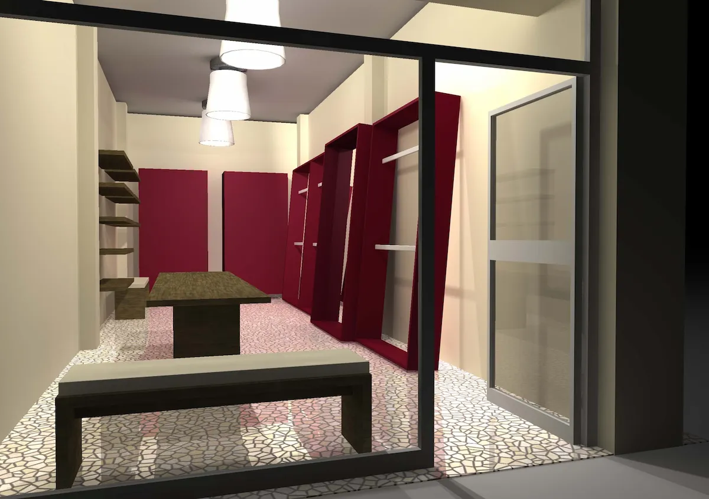
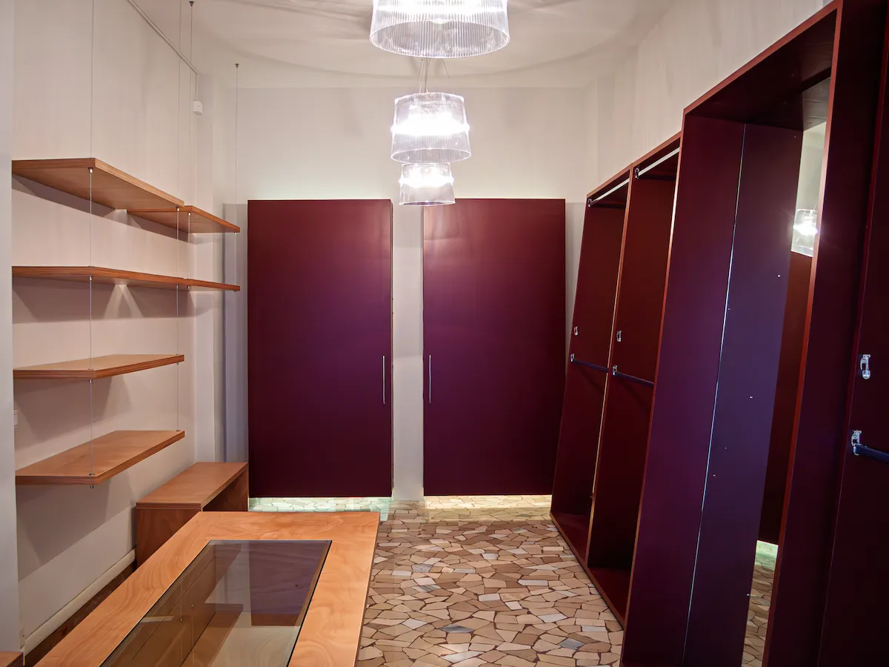
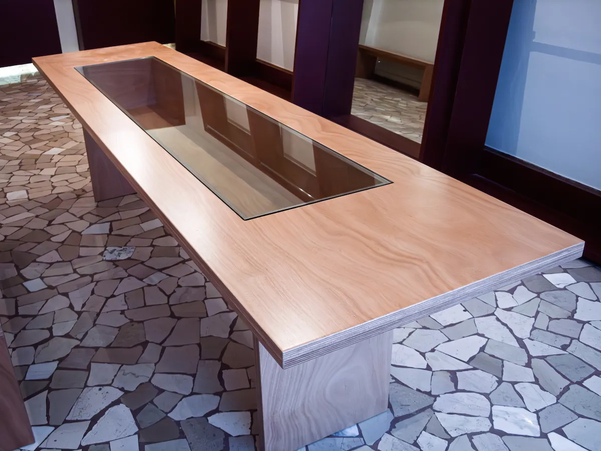
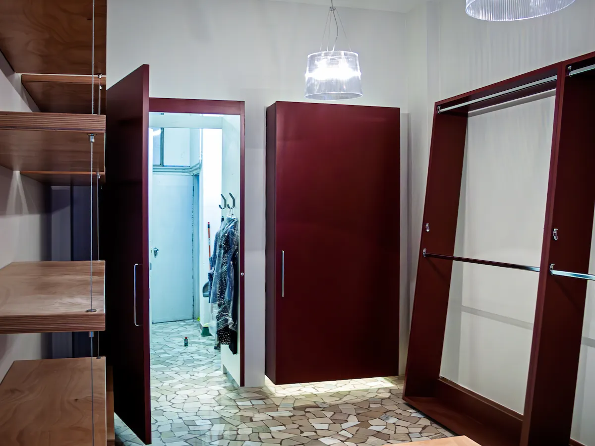
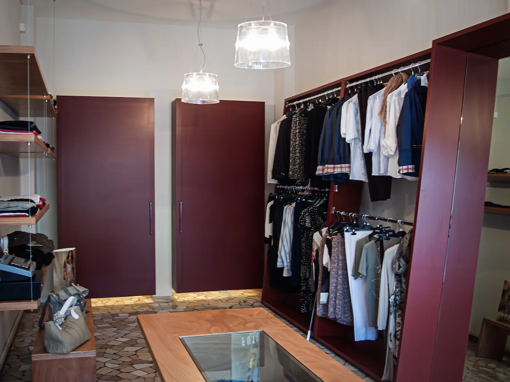

Piante strette e profonde sono spesso viste come un ostacolo. Per Vitty’s (2011), abbiamo scelto di non subire il limite, ma di renderlo il protagonista del racconto. La sfida era chiara: dividere l’area vendita dai volumi tecnici e dal magazzino senza interrompere il flusso visivo, mantenendo quell'eleganza sofisticata che il brand richiedeva. Il cuore dell'intervento risiede in due bussole centrali che fungono da filtri dinamici. Questi volumi, che ospitano i camerini, non toccano mai realmente il suolo: una lama di luce perimetrale alla base li solleva da terra, conferendo una leggerezza quasi eterea a strutture altrimenti massicce. Non sono semplici cabine prova, ma veri e propri passaggi architettonici "vivi" che guidano l’utente verso i locali di servizio, rendendo il percorso funzionale parte integrante dell'esperienza estetica.
Secondo paragrafo se serve. Approfondimento sulle scelte progettuali, sui materiali, sulle soluzioni adottate.





